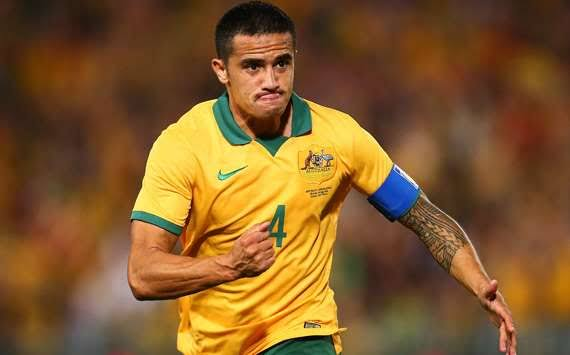
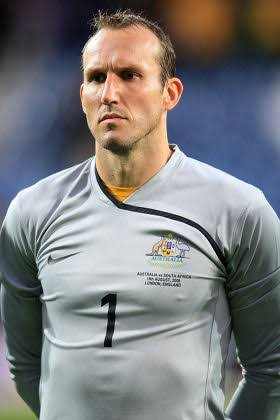
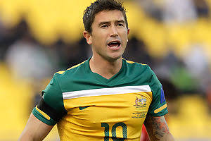
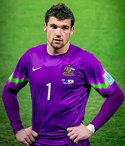

AUSTRALIA
El coloso de Oceanía, plenamente adaptado a las exigencias del fútbol asiático, arriba al torneo con un juego físico, dinámico y con la intención de replicar sus hazañas previas.





Han logrado superar la exigente fase de grupos en dos ocasiones doradas: Alemania 2006, cayendo ante Italia, y Qatar 2022, donde batallaron de tú a tú con Argentina.
Hicieron historia al ganar 4 Copas de Oceanía (OFC) antes de mudarse a la Confederación Asiática (AFC), la cual conquistaron ganando la Copa Asiática en 2015.
Se han convertido en un invitado indiscutible de las Copas del Mundo, logrando hilvanar clasificaciones consecutivas en todas las ediciones desde 2006.
AFC (Asia) - *Compiten ahí desde 2006*
The Socceroos
Dar el salto definitivo. Con una plantilla atlética y disciplinada, el propósito de los de Oceanía es clasificar por primera vez en su historia a los Cuartos de Final.